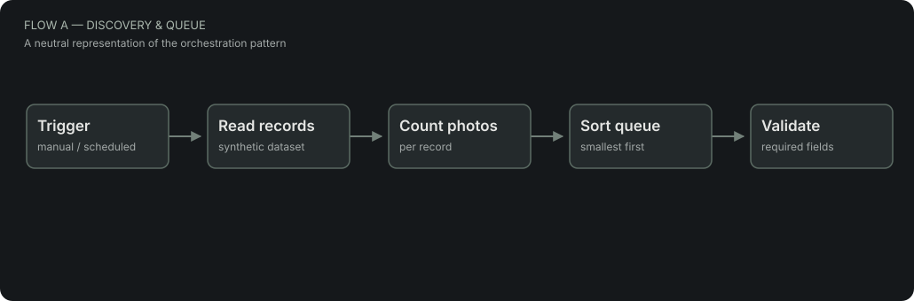
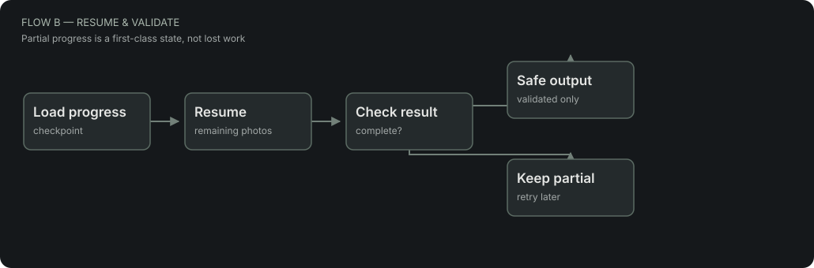

01 — Discovery & queuesort + select

ENGINEERING CASE STUDY · OFFLINE DEMO
A small, self-contained demonstration of queueing, resumable processing, validation and browser-side tooling.
Inspired by real automation work, rebuilt with fictional data. This is not a client workflow or a live integration.
01 / SYSTEM OVERVIEW


02 / LIVE SIMULATION
Try “Simulate rate limit”, then “Process next” to resume without repeating the same photo.
| Fictional record | Photos | Processed | State |
|---|---|---|---|
| Loading demo records… | |||
03 / COMPONENTS
Smallest jobs first, checkpoints after each simulated item, retry from the last position.
src/engine.jsExample records and a schema for states, progress, issue type and review-ready output.
data/ · docs/notion-schema.mdManual autofill and completeness audit on a local demo form. Nothing touches a real website.
Open local demo form ↗